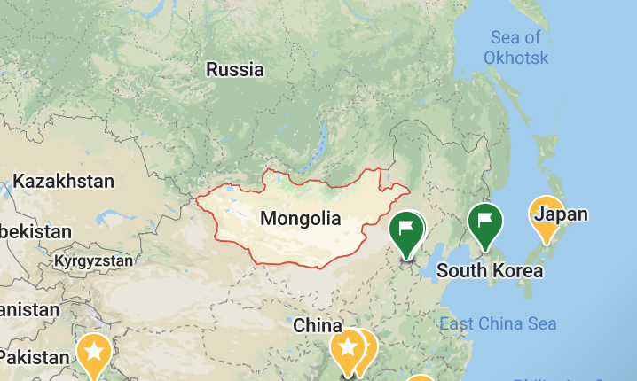
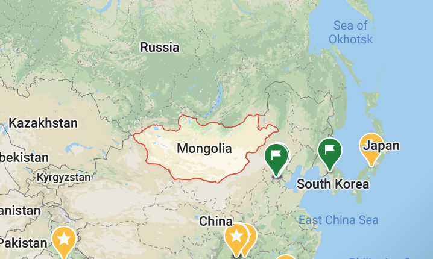

Return
 

Natural Zone of Mongolia: Mongolia is one of the few countries, which possesses a great range of natural ecosystems within their borders. Mongolia is located at the junction of Siberian taiga, Central Asian prairie, steppe, and deserts. This junction offers distinct species of fauna and flora throughout the territory.